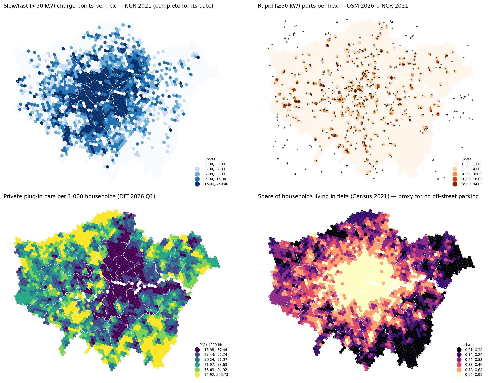

ChargeScape London
A spatial decision system for EV charging networks under uncertain demand
Where should the next rapid-charging hubs in Greater London go, how many ports and what power — and how sure can we be? Built end-to-end from open data, with every assumption visible.
Marija Ercegovac · urban planner turned geospatial data scientist · github.com/m-erts/chargescape-london
Charging is an infrastructure business that lives or dies on utilisation
The economics
A hub in the wrong hex idles at 5 % and never pays back; the right one runs above 20–30 % with queues. McKinsey and ICCT put break-even between 15 % and 20 % utilisation — payback halves between 10 % and 20 %.
The analytics gap
Operators describe site selection as a demand model on dozens to hundreds of factors. Public projects almost never predict usage (they predict where chargers already are), carry uncertainty into the decision, model queues and cannibalisation, or say how they would be proven wrong.
Four things this system does that gap maps do not
- Labels on every dataset. observed / proxy / synthetic — 23 sources in the catalog; the label follows the number into every table.
- Usage, checked against reality. Demand is modelled bottom-up, then checked against DfT charger counts × TfL occupancy and open session logs.
- Uncertainty reaches the decision. P10/P50/P90 per hex; a robust MILP picks hubs that hold across scenarios; the overlap with the P50 answer says which sites are safe.
- Queues, cannibalisation, grid. Erlang-C capacity per hub, new vs stolen demand for any candidate, primary-substation headroom as a filter.
Supply follows devices; need follows cars without driveways

- Inner boroughs: ~1,400 chargers per 100k residents, mostly 5–7 kW lamp-post units. Rapid share: 40 % in Havering and Hillingdon, under 4 % in Westminster and Hackney.
- Private plug-in cars cluster in outer, house-rich boroughs; Moran's I = 0.73.
- EV owners in flats — the group that depends on public charging — form Gi* hot spots in inner-west and inner-south London.
- Median drive time to a rapid site is a few minutes: in London the binding constraint is capacity and queues, not distance.
A demand surface with the uncertainty attached live map
No London usage data is open — so the model is checked against what is observed
Supply-implied energy
28.8k slow + 2.5k rapid chargers (DfT) × TfL-observed occupancy × charging-time share ⇒ ≈ 760 GWh/yr the network could deliver.
Modelled demand
285 GWh P50 (P10–P90 216–361); rapid-type demand ≈ 207 GWh — the same order as the rapid side of the supply estimate.
The wide band is the honest statement: the two levers are the public-charging share of drivers without a driveway and the size of the electric PHV fleet.
Where the demand lands today — and where queues form at the peak hour live map
Siting new 4 × 150 kW hubs under budget, capacity, grid and demand uncertainty live map
Do context features explain observed utilisation anywhere? A negative result, on purpose

- 204 chargers with open session logs (Dundee, Perth & Kinross, Palo Alto, Boulder); LightGBM on OpenStreetMap context, population and charger power.
- Charger power and the city's level dominate; rankings do not transfer reliably (Spearman −0.3 to +0.6 by city).
- Implication: any "geo-embedding site model" must be validated out-of-city against observed usage — this is the test to ask for.
Limitations — and how the whole thing would be proven wrong
Known limitations
- No open London charger-level usage; behaviour from other UK cities and fleet trials.
- Open Charge Map covers most sites but not all ports; remaining gaps are closed by borough-level calibration to DfT totals.
- Choice-model coefficients are literature-informed, not estimated.
- Grid constraint stops at primary-substation headroom.
- Area-weighted LSOA→hex interpolation; ≈1.4 % of population in dropped edge hexes.
The post-hoc test
DfT/Zapmap publish borough device counts quarterly; TfL publishes utilisation by charger type.
Hubs opened after July 2026 in hexes flagged here as high unmet demand should reach above-median utilisation within a year.
If not, the model card names the priors to revisit first: PHV fleet size, public share without home charging, choice radius.
Predict → deploy → measure → retrain is the product; the maps are its interface.
Explore it
- Repository: github.com/m-erts/chargescape-london — code, 16 tests, data catalog with 23 source cards, methodology, model card
- Notebooks 01–05: supply audit · demand surface · choice & queues · siting · utilisation transfer
- Live maps (MapLibre): demand 2026 · network load & queues · selected hubs, £20M
- Reproduce:
pip install -e . → make data → make features → make models → make maps
Marija Ercegovac · mercegovacm@gmail.com